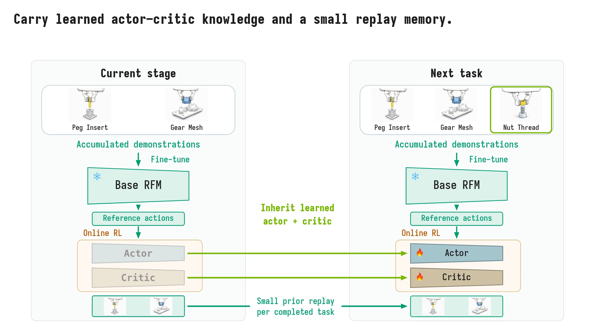

ACCRUEContinual Off-Policy Reinforcement Learning for Robot Foundation Models
ACCRUE enables robot foundation models to learn new tasks faster through off-policy RL while retaining previously learned skills.
less robot interactionAutoMate · new tasks vs. single-task RL
less robot interactionNIST · new tasks vs. single-task RL
mean final prior-task success118 / 120 trials · 6 prior tasks
Real-world learning
ACCRUE vs. single-task RL
Interactive learning curves
Task learning curve
Metric definitions
Success rate uses a rolling window of 20 valid online RL episodes and the existing EMA display smoothing (0.8 new + 0.2 previous). Dashed segments use the available episodes before the first complete window. Robot time includes online warmup, but not demonstration collection or wall-clock training. Shading marks the difference in total recorded robot interaction time. Stage 1 is shared, so it has no separate ACCRUE run. Smoothed endpoints can be below the unsmoothed 95% stopping criterion.
Download the plotted values (JSON)Prior-task retention
Earlier tasks evaluated over 20 trials per checkpoint.
Final-policy rollouts
Qualitative examples; success rates come from separate evaluations.
Final-policy footage for the selected earlier tasks, not recordings from each checkpoint.
Earlier tasks evaluated after stage 5.
20 trials per taskView every retention checkpoint
The task just learned is not counted as a prior task. Blank cells indicate that a task was not yet eligible for retention evaluation.
Video overview
Method

Update the RFM with accumulated demonstrations and inherit the actor–critic.
Simulation experiments
FORGE with GR00T + FastSAC, evaluated separately from the real-world setup.
New-task learning
FORGE / FWT ↑RL: 4 task orders × 4 seeds.
Metric and comparison scope
FWT is the mean peak-held current-task learning-curve AUC, not a success-rate delta. The demonstration-only RFM is a static reference from 12 task evaluations; RL uses four task orders × four seeds. This focused comparison does not claim the highest FWT among all continual methods: ER has FWT 0.833. These point estimates have no displayed uncertainty; see the paper for full results.
Qualitative prior-task rollouts after learning NutThread.